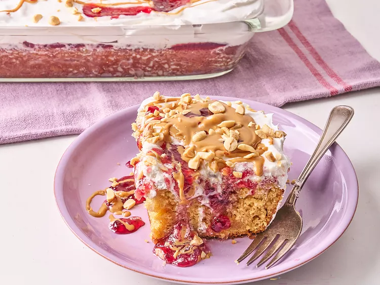

Peanut Butter and Poke Cake Recipe

Description
Enjoy a nostalgic twist with this peanut butter and jelly poke cake! Fluffy vanilla cake is infused with sweet jelly and topped with creamy peanut butter frosting for the perfect balance of flavors.
This easy dessert is great for gatherings or satisfying your PB&J cravings. The tender cake soaks up the fruity jelly, creating a gooey, flavorful bite. A rich peanut butter topping adds a creamy contrast, making each slice irresistible. Whether served at a party or enjoyed as a sweet snack, this poke cake is sure to bring comfort and smiles. Plus, it’s simple to make, so you can whip it up anytime a craving strikes!
Ingredients
- 1 (15.25 ounce) box vanilla cake mix
- 1 1/4 cup peanut butter, divided
- 1/2 cup butter, melted
- 4 large eggs
- 1 1/4 cups milk
- 1 1/4 cup grape jelly, divided
- 8 ounces whipped topping
- 1/4 cup chopped peanuts
Instructions
- Preheat the oven to 350 degrees F (180 degrees C). Grease a 9x13-inch baking pan.
- Add cake mix, 1 cup peanut butter, butter, eggs. and milk to a bowl, and stir until well combined. Batter may be slightly lumpy. Pour batter into the prepared pan.
- Bake in the preheated oven until a toothpick inserted in the center comes out clean, about 35 minutes. Let stand for 10 minutes.
- Use the handle of a wooden spoon to poke holes into the cake. Melt 1 cup jelly in the microwave until pourable, 1 to 2 minutes, stirring every 30 seconds. Spread jelly over warm cake with a spatula and work jelly down into the holes. Let cake cool completely.
- Spread whipped topping over cake; refrigerate until ready to serve.
- Microwave remaining 1/4 cup peanut butter and 1/4 cup jelly until just pourable; drizzle cake with peanut butter and jelly and sprinkle with peanuts to serve.
- Serve and Enjoy!
Go back to the home page to see more recipes!